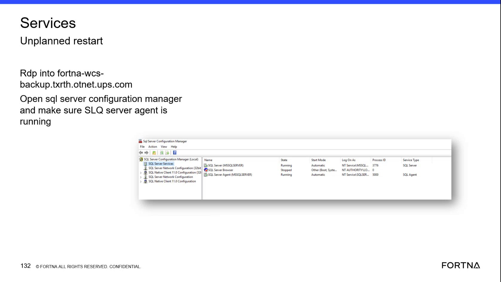

| Procedure ID | proc_check_sql_server_agent_status_in_sql_server_configuration_manager_v1 |
|---|---|
| Title | Check SQL Server Agent Status in SQL Server Configuration Manager |
| Procedure Type | diagnostic |
| Primary Role | L1_support |
| Support Safe | Yes |
| Capability Tags | wcs_service_health |
| Access Surface | event_viewer, rms_ui |
| Audience Roles | L1_support, L2_support |
| Failure Pattern Tags | unplanned_restart, service_crash_or_restart |
| Validation Status | needs_sme_review |
| Merge Status | source_finalized |
Use the Windows Event Viewer / services surface to RDP to the identified WCS backup server, open SQL Server Configuration Manager, and verify that SQL Server Agent (MSSQLSERVER) shows State as Running and Start Mode as Automatic. Then check the RMS / fleet status UI to confirm that RMS is up and running.
Use this diagnostic after an unplanned restart or while verifying WCS/RMS service health. Check SQL Server Agent on the Windows Event Viewer / services surface and corroborate availability in the RMS / fleet status UI.

Responsible role: L1_support
Instruction:
Using the Windows Event Viewer / services surface, RDP into the identified WCS backup server at fortna-wcs-backup.txrth.otnet.ups.com and open SQL Server Configuration Manager.
Expected result:
SQL Server Configuration Manager (Local) opens and exposes the SQL Server Services view.
Stop or Escalate If:
Responsible role: L1_support
Instruction:
In SQL Server Configuration Manager on the Windows Event Viewer / services surface, open SQL Server Services and locate the row named SQL Server Agent (MSSQLSERVER).
Expected result:
The SQL Server Agent (MSSQLSERVER) row is visible in the SQL Server Services list.
Stop or Escalate If:
Responsible role: L1_support
Instruction:
In the SQL Server Services view on the Windows Event Viewer / services surface, inspect the State and Start Mode fields for SQL Server Agent (MSSQLSERVER).
Expected result:
The SQL Server Agent (MSSQLSERVER) row shows State as Running and Start Mode as Automatic.
Stop or Escalate If:
Responsible role: L1_support
Instruction:
Open the RMS / fleet status UI and check whether the RMS view is up and running.
Expected result:
RMS is available for the corresponding operational check.
Stop or Escalate If: